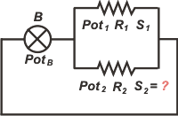

NO ME SALEN
EJERCICIOS RESUELTOS DE FÍSICA DEL CBC
FLUIDOS - PRINCIPIO DE ARQUÍMEDES |
|

|
| |
Adicional NMS 35*) Una bomba hidráulica entrega 1 W de potencia a un circuito constituido por dos tubos cilíndricos horizontales en paralelo, de igual longitud y diferente sección, para poder mantener el flujo de un líquido viscoso en régimen laminar y estacionario. Un tubo consume 0,2 W, siendo su sección de 2 cm². La sección del otro tubo es: |
| a) 1 cm² b) 2 cm² c) 4 cm² d) 6 cm² e) 8 cm² f) 16 cm² |
|
Ejercicio sencillo y rebuscado. Suerte que lo encontré por primera vez acá, para aprender, y no en medio de un examen.
Empecemos por hacer un esquema. Eso nos va a servir para ponerle nombre a los elementos del circuito y a los valores que aporta el enunciado. |
|
|
 |
Acá aparece la bomba, B, que aporta una potencia PotB = 1 W.
La salida de la bomba se bifurca en dos tubos, 1 y 2, que aportan la resistencia al circuito, y que llamé R1 y R2.
El tubo 1 tiene una sección S1 = 2 cm² y consume una potencia Pot1 = 0,2 W. |
|
|
|
Y el tubo 2 consume una potencia Pot2 que no sabemos cuánto vale ni tampoco su sección, S2, que es la incógnita del ejercicio. (Estoy por suicidarme).
Que no cunda el pánico. Lo primero que tenés que saber es que como se trata de un circuito (de un circuito cerrado) la potencia neta valdrá cero, es decir que toda la potencia entregada por la bomba se disipará (se consumirá) en las resistencias. Algebraicamente:
PotB = Pot1 + Pot2
De ahí deducimos el valor de la potencia consumida por el tubo 2.
Pot2 = 0,8 W
El resto es casi pura álgebra. La potencia hidrodinámica se puede calcular de la siguiente manera:
Pot = ΔPr² / R
Donde ΔPr es la caída de presión en cada tubo. En nuestro caso esa caída de presión es la misma para ambos tubos, ya que están asociados en paralelo. De modo que podemos escribir:
Pot1 . R1 = Pot2 . R2
Y las resistencias son inversamente proporcionales a las secciones al cuadrado. De modo que la igualdad anterior podemos reescribirla así: |
|
|
|
|
|
Donde K es el producto de 8π por la viscosidad del fluido por la longitud de los tubos. Lo puse así para no escribirlo ya que vale lo mismo para ambos tubos e inmediatamente lo cancelo. De ahí despejo la sección del tubo 2 y la calculo.
S2² = (Pot2 / Pot1) . S1²
S2² = (0,8 W / 0,2 W) . S1²
S2² = 4 . S1²
Saco raíz cuadrada en ambos miembros...
S2 = 2 . S1
S2 = 2 . 2 cm²
|
|
|
|
|
|
No era tan dramático. Había que tener presente algunas nociones clave. |
|
|
* Este ejercicio formó parte del examen libre de Biofísica tomado en dic-2010.
Para ver el tema completo y el resto de las resoluciones entrar acá. |
|
|
| DESAFÍO: ¿Cuál es la relación entre caudales entre el tubo ancho y el angosto? |
|

|
| Algunos derechos reservados.
Se permite su reproducción citando la fuente legítima, o sea, este sitio. Última actualización
ene-14. Buenos Aires, Argentina. |
|
|
| | |
|
|